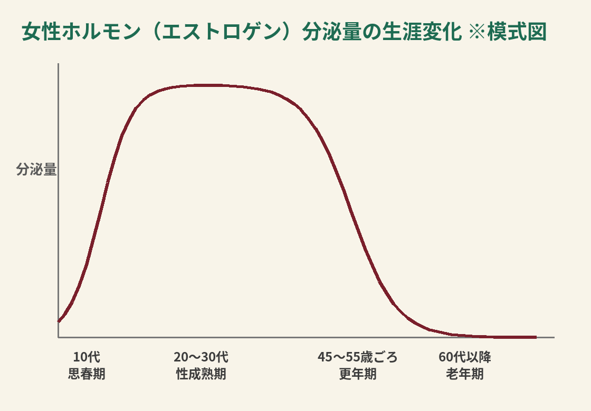

エストロゲンの分泌の波と、年代ごとの体の変化の関係を解説します
女性の体は、女性ホルモン（エストロゲン）の分泌量の変化とともに、年代ごとに少しずつ変わっていきます。変化の波を知ることは、今の不調の背景を理解する手がかりになります。
PMS、産後の体の変化、更年期のほてりや不調。これらは別々の出来事のようでいて、背景には共通して女性ホルモンの波があります。このページでは、分泌量の生涯の変化と、年代ごとの体の特徴、美容整体の立場からできることを解説します。
エストロゲンの分泌は、思春期に増え始め、20〜30代で安定したピークを迎え、40代後半から大きく下がり、閉経後は低い水準で落ち着きます（図1）。この波の「下がり方」の時期にあたるのが更年期で、体が変化に適応するまでの間、さまざまな不調が出やすくなります。

図1：エストロゲン分泌量の生涯変化の模式図。分泌量の変化の速さが大きい時期ほど、体は変化を感じやすくなります。
分泌は安定し、月経周期のリズムが整う年代です。一方で、無理なダイエットや睡眠不足は周期の乱れにつながりやすく、冷えやむくみを感じる方も少なくありません。姿勢の崩れが固定される前に整える習慣が、将来の土台になります。
妊娠・出産を経験する方が多い年代です。産後は骨盤まわりへの負担に加え、育児による睡眠不足と姿勢の偏りが重なります。肩こりや腰の重さ、骨盤まわりの違和感を感じやすい時期です。
分泌量がゆるやかに下がり始め、周期の乱れやPMSの変化を感じる方が増えます。筋肉量の低下も始まり、姿勢の崩れや疲れの取れにくさが目立ってきます。
分泌量が大きく下がる時期です。ほてり（ホットフラッシュ）、発汗、眠りの浅さ、気分の波などが出やすくなります。症状の出方には個人差が大きく、日常生活に支障がある場合は婦人科への相談が大切です。
分泌は低い水準で落ち着きます。骨や筋肉の変化が進むため、姿勢を支える筋肉を保つことと、巡りを助けるケアの意味が大きくなる年代です。
ホルモンの分泌そのものを、整体やマッサージで変えることはできません。一方で、波の影響を受けて起こる体の変化——筋肉の張り、巡りの滞り、眠りの浅さ、姿勢の崩れ——には、ボディケアで働きかけられます。当サロンでは、年代と周期のタイミングをうかがいながら、その日の体に合う進め方を選んでいます。
なお、出血の異常や強い痛みなどがある場合は、ボディケアの前に婦人科での確認をおすすめしています。
エストロゲンの波は、一生という長い単位だけでなく、月経周期という短い単位でも動いています。月経後はエストロゲンが増える時期で、体が軽く感じられる方が多く、月経前はプロゲステロン（黄体ホルモン）の影響が強まり、水分をため込みやすく、むくみや張り、気分の波が出やすくなります。PMSと呼ばれる不調は、この時期の変化が強く出たものです。
周期の波を知っておくと、「今週はむくみやすい時期だから、ケアを厚くしよう」というように、体の状態を予測して付き合えるようになります。施術の予約を周期に合わせる方がいるのも、この波に合わせた考え方です。
エストロゲンには、血管や皮膚、骨の状態を保つ働きがあります。分泌が下がる年代では、筋肉や靭帯のハリも変わり、姿勢を支える力や巡りに影響が出てきます。更年期以降に「疲れが取れにくい」「むくみやすい」と感じる背景には、生活習慣だけでなく、この変化も重なっています。
だからこそ、この年代のケアは「戻す」より「保つ」視点が大切になります。筋肉の張りをほどいて巡りを助け、姿勢を支える筋肉が働く状態を保つことが、日常の快適さにつながります。
| 年代 | 体の特徴 | ケアの視点 |
|---|---|---|
| 20代 | 分泌は安定。生活の乱れが周期に出やすい | 冷え・むくみ対策と、姿勢の習慣づくり |
| 30代 | 出産と育児の負担が重なる | 産後の骨盤まわりと、肩・腰の張りのケア |
| 40代 | 分泌が下がり始め、変化の入り口 | 疲労回復と、姿勢を支える筋肉を保つこと |
| 50代前後 | 更年期。ほてりや眠りの浅さ | 緊張をほどき、休息モードへの切り替えを助ける |
| 60代以降 | 低い水準で安定。筋肉量の変化 | 巡りを助け、動ける体を保つこと |
更年期の不調は、分泌量の低下そのものよりも「変化の速さ」に体がついていく過程で出ると考えられています。波が落ち着くまでの数年間を、どう穏やかに過ごすかが大切な視点です。睡眠を確保すること、体を冷やさないこと、緊張をほどく時間を持つことは、どの年代のケアとも共通する土台になります。
ほてりや発汗がある日は、施術の室温や掛け物の調整も行います。「今日は体調がこう」と一言伝えていただくことで、その日に合う進め方に変えられます。不調をがまんして受ける必要はありません。
エストロゲンには骨の量を保つ働きがあり、分泌が下がる年代では骨が弱くなりやすくなります。また、筋肉量は40代以降、少しずつ減っていくのが自然な変化です。骨と筋肉は、姿勢を支える土台そのものです。
対策は特別なことではなく、たんぱく質を含む食事、歩行を中心とした日常の運動、そして姿勢を支える筋肉が働く状態を保つことです。美容整体のケアは、この「保つ」取り組みと並行して行うことで意味を持ちます。体の変化を止めるのではなく、変化に合わせて快適に過ごすためのケアとしてご活用ください。
PMS（月経前症候群）は、月経前の時期に起こる心と体の不調の総称です。むくみ、胸の張り、お腹の重さ、眠気、気分の波など、現れ方は人それぞれです。背景には、この時期のホルモンの変化と、それに伴う水分のたまりやすさ、自律神経の揺れがあります。
付き合い方の基本は、周期を記録して予測できるようにすることです。「この時期はむくみやすい」「この時期は予定を詰めない」というように、波に合わせて生活を調整できると、不調に振り回される感覚が和らぎます。施術の予約も、月経前のケアとして周期に合わせる方がいます。
出産後は、ホルモンの分泌が大きく変わる時期です。妊娠中に増えていたホルモンが急に下がり、授乳に関わるホルモンが中心になります。この変化に、育児による睡眠不足と体の負担が重なります。骨盤まわりの違和感、肩や背中の張り、気分の波は、この時期に多くの方が感じる変化です。
産後のケアは、無理のない範囲で、時期を見ながら進めることが大切です。当サロンでは産後の経過をうかがい、その時期に合う進め方を選んでいます。
年代ごとの変化は、避けられないものです。しかし、仕組みを知っているかどうかで、付き合い方は変わります。「年のせい」で片付けてしまう前に、今の不調がどの波の上に起きているのかを知ること。それが、このページの目的です。当サロンでは、年代と周期をうかがいながら、その方の波に合わせたケアを組み立てています。
年代の波と月周期の波を読み解く道具が、簡単な記録です。月経の開始日と、その日の体の状態（むくみ、眠気、張り、気分）をメモするだけで、自分の波のパターンが見えてきます。パターンが見えると、ケアの予約や予定の立て方を波に合わせられるようになります。当サロンでも、周期の記録をもとに来店のタイミングを相談される方がいます。
月経前や更年期には、冷えを感じやすくなる方がいます。ホルモンの変化が血管の働きや自律神経に影響し、末端の血行が落ちやすくなるためです。冷えはむくみや張りを強める方向にも働きます。年代の変化と冷えが重なる時期ほど、温めるケアの意味は大きくなります。当サロンでも、この時期の方には温める工程を厚くする進め方を選ぶことがあります。
Q. 更年期の不調は、いつまで続きますか？
A. 閉経を挟んだ前後5年ほどが更年期とされ、症状の出方と期間には大きな個人差があります。日常生活に支障がある場合は、婦人科で相談されることをおすすめします。
Q. 施術を受けるタイミングは、周期で変えた方がいいですか？
A. 生理前はむくみや張りを感じやすく、生理後は体が軽く感じられる方が多いです。必須ではありませんが、気になる方は周期に合わせて予約される方もいます。
Q. ホルモンバランスを整える施術はありますか？
A. ホルモンの分泌そのものを変える施術はありません。当サロンでは、分泌の波の影響で起こる張り・巡り・姿勢の変化に働きかけるケアを行っています。
Q. PMSの時期の施術は大丈夫ですか？
A. 体調が安定していれば問題ありません。腹部の施術を避けるなど、その日の状態に合わせて進め方を調整しますので、ご予約時や来店時にご相談ください。
解説と施術は、施術歴30年・鍼灸師の資格を持つ平賀建人が担当します。登録販売者・アロマセラピスト・パーソナルトレーナーの知識も活かし、体の仕組みをできるだけ分かりやすくお伝えすることを心がけています。
この記事は専門解説シリーズの1本です。料金やご予約についてはトップページをご覧ください。